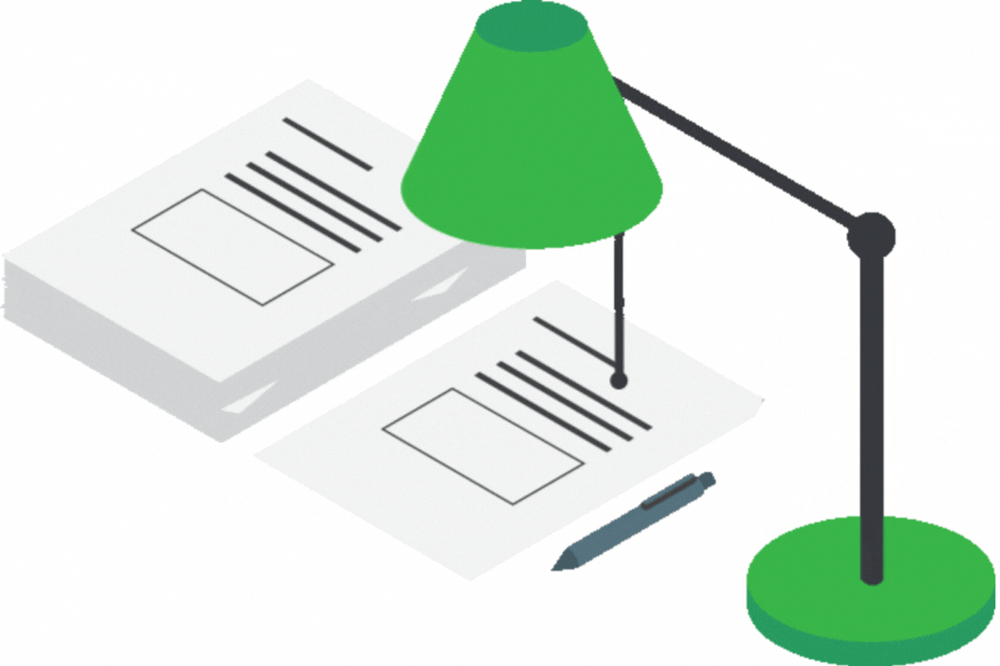

Un objeto cuenta con las siguientes características:
Estado
- El estado de un objeto es cómo se encuentra en un momento específico, y este estado suele cambiar con el tiempo.
- Está formado por un grupo de atributos junto con los valores de estos mismos.
Ejemplo: Una lampará
El estado de una lámpara se puede describir por atributos como:
- estaEncendida = "si"
- intensidad = "50%"

En algún momento, el estado de la lampará esta determinado si esta encendida o apagada y por la intensidad de la luz. Por otro lado, si se apaga o se ajusta la intensidad, cambiará su estado.
Comportamiento
- Los comportamientos determinan como los objetos actúan y reaccionan ante las solicitudes de otros objetos.
- El comportamiento es representado por las funciones o procedimientos que el objeto puede hacer.
Ejemplo: Un perro
El comportamiento de un perro se describe por los métodos o acciones que puede realizar:
- ladrar()
- comer()
- correr()
- dormir()
El comportamiento del perro esta definido por lo que puede hacer, ya sea que este ladrando o corriendo.
Identidad
- Cada objeto tiene una identidad única que lo diferencia de otros objetos, incluso si tienen el mismo estado y comportamiento.
- La identidad permite que podamos distinguir un objeto de otro, incluso si son muy similares en apariencia.
Ejemplo: Una cuenta bancaria
La identidad es lo que hace que un objeto sea único, en este caso es:
- númeroCuenta = "12345678"
- titular = "Juan Pérez"
- saldo = "$1,000"
Suponiendo que dos cuentas bancarias tengan el mismo titular y el mismo saldo, ambas pueden ser idénticas, pero lo que permite distinguir una cuenta de la otra es el Número de cuenta.

{kind=link}
{kind=link}
{kind=link}
{kind=link}